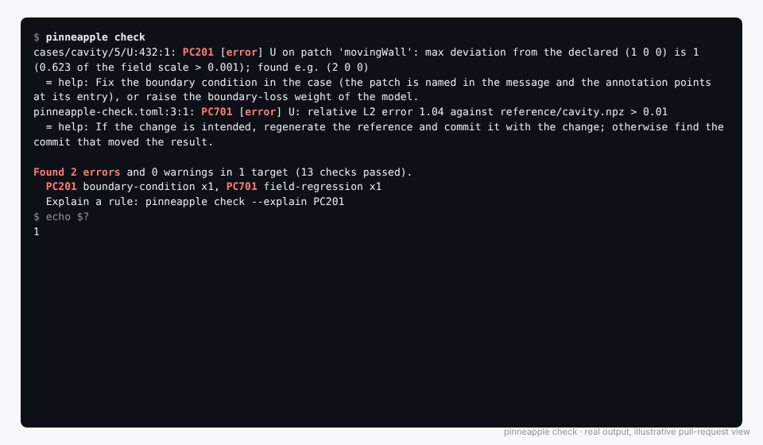

Physics checks in CI¶
pinneapple check is a linter for physics. It reads simulation results and Physics-AI models and fails when they
violate physics: conservation of mass, energy or momentum, the governing PDE, boundary and initial conditions,
bounds, units, the training range of a model, a stored reference, or the integrity of the files. It works like
ruff or pytest: zero configuration to start, readable output, exit codes, and SARIF/JUnit for CI. The GitHub
Action in this repository turns a violation into a failed check with an annotation on the line that caused it.

The lid speed of a cavity case changed from 1 to 2 m/s in 0/U: the boundary condition, the stored reference
and the wall rule fail, and the annotation sits on the movingWall entry. Rendered from the real output of
pinneapple check examples/physics_check/fail.
Add it to a repository in three lines¶
# .github/workflows/physics-check.yml (steps of a job with `security-events: write`)
- uses: actions/checkout@v4
- uses: PINNeAPPle-Labs/PINNeAPPle@main # pin a tag or a commit SHA
and a pinneapple-check.toml at the root (or nothing: see zero configuration). A complete
workflow is in examples/physics_check/workflow.yml.
Locally:
pip install "pinneapple[check]"
pinneapple check # or: python -m pinneapple.check
What it checks¶
| Target | Read with | Checks |
|---|---|---|
| OpenFOAM case folder | polyMesh, the latest time (and the one before, and 0), phi when written |
mass balance from the solver flux, divergence, momentum or heat residual with the case's own Gauss-linear operators, boundary values per patch, initial fields, wall velocity, bounds, units from dimensions |
.npz / .h5 on a grid |
1-D coordinate arrays x, y, z, t and fields of shape (len(x), len(y), ...) |
second-order finite differences: residual, divergence, boundary balances over the box, conserved totals in time, boundary and initial values |
.vtu / .vtk, point tables (.csv, .npz, .h5) |
meshio, x, y, z columns; a point set on a lattice becomes a grid |
least-squares derivatives for residual and divergence; bounds and units |
.csv of quantities of interest |
name,value[,unit] rows, or one row with a column per quantity |
regression against a reference with relative or absolute tolerances |
Model: file.py:function |
any framework behind a NumPy function (N, n_inputs) -> (N, n_outputs) |
PDE residual and divergence by central differences at sampled points, balances on a grid over its domain, boundary and initial conditions, bounds, training range of the queries, reference points |
Model: .pt checkpoint + architecture (a pp.list_models() name) |
scanned first, then torch.load(weights_only=True); training range from metadata.domain_bounds |
the same, plus PC803 |
Model: zoo = "name" (a pp.zoo.list() name) |
the pre-trained, verified model; inputs, outputs and validity range from its model card | the same; without a full domain, predictions are checked at the queries |
Model: hub = "org/name" |
pinneapple_hub.from_pretrained; training range from the model card |
the same |
| Artefacts | [integrity]: manifest, public key, signed globs; sha256 = ... on a target |
hashes, signatures, untracked files |
Physics: incompressible-flow (div u = 0; du/dt + (u.grad)u + grad p/rho - nu lap u = 0, p kinematic unless
rho is given), heat (rho_cp dT/dt = k lap T + q, or alpha for the diffusivity), elasticity (div sigma +
f = 0, E and nu, plane strain in 2-D), conservation (dq/dt + div F = S, with flux = { q = "F" }).
Every number is relative, so one default tolerance works across units and scales: a residual is RMS(residual) / RMS(sum of the absolute terms), a balance is |net flow| / total absolute flow through the boundary, a boundary deviation is a fraction of the field scale. Defaults are in the table at the end; override per target.
Configuration¶
pinneapple-check.toml (or the same tables under [tool.pinneapple.check] in pyproject.toml; paths are
relative to the file):
[check]
select = ["ALL"] # ruff-style prefixes: "PC1", "PC201"
ignore = ["PC203"]
fail-on = "error" # error | warning | never
baseline = ".pinneapple-check-baseline.json"
severity = { PC502 = "error" } # change the level of a rule
[[result]]
name = "cavity"
path = "cases/cavity" # OpenFOAM case
physics = "incompressible-flow"
parameters = { nu = "0.01 m2/s" } # a number (SI) or "<number> <unit>": the dimension is checked (PC504)
units = { U = "m/s", p = "m2/s2" }
ic = { U = [0, 0, 0] }
reference = { path = "reference/cavity.npz", fields = ["U"], rel-l2 = 1e-3 }
tolerances = { residual = 0.05 }
[result.bc.movingWall] # a patch name; on grids "x=min", "y=max" or "x=0.5"
U = [1, 0, 0]
[[result]]
path = "fields/heat_plate.npz"
physics = "heat"
parameters = { k = "10 W/(m*K)", q = "1000 W/m3" }
[result.bc."x=max"]
T = "300 + 25*(1 - y**2)" # an expression of x, y, z, t (numpy functions, pi)
[[result]]
path = "qoi/airfoil.csv"
[result.reference]
path = "reference/airfoil.csv"
qoi = { Cd = { rel = 0.02 }, Cl = { abs = 0.005 } }
[[model]]
name = "pinn"
path = "models/pinn.py:predict"
inputs = ["x", "y"]
outputs = ["u", "v", "p"]
physics = "incompressible-flow"
parameters = { nu = 0.025 }
domain = { x = [-0.5, 1.0], y = [-0.5, 1.5] } # where to sample (default: train-range)
method = "E10" # id in the method catalog (PC901)
[[model]]
name = "surrogate"
path = "models/surrogate.py:predict"
inputs = ["Re", "aoa"]
outputs = ["Cd"]
train-range = { Re = [1e5, 1e6], aoa = [0, 10] }
train-samples = "models/training_points.csv" # for the data-gap rule PC602
queries = "models/queries.csv" # the inputs the model will be asked about
[integrity]
manifest = "models/manifest.json" # python -m pinneapple_security manifest models -o models/manifest.json
public-key = "keys/release.pub.json"
signed = ["models/*.pt"] # each needs a valid <file>.sig
Wrapping a model of another framework is two lines:
# models/pinn.py
def predict(X): # X: (N, 2) array of x, y
return net(torch.as_tensor(X, dtype=torch.float32)).detach().numpy() # (N, 3): u, v, p
Zero configuration¶
Without a configuration file, pinneapple check [paths] looks for OpenFOAM case folders and .vtu, .vtk,
.npz, .h5 files, infers incompressible flow from U and p, and runs what needs no declaration: finite
values, physical admissibility from field names (absolute temperature and density positive, alpha.* and mass
fractions in [0, 1], k, epsilon, omega, nut non-negative), mass balance, divergence and wall velocity.
Command line¶
pinneapple check [paths] [--config FILE] [--select PC1,PC201] [--ignore PC5] [--extend-select ...]
[--format text|json|sarif|junit|github|summary] [--output FILE]
[--sarif FILE] [--junit FILE] [--json FILE] [--summary FILE]
[--baseline FILE] [--write-baseline] [--no-baseline]
[--fail-on error|warning|never] [--exit-zero] [--show-passed] [--no-fixes]
[--list-rules] [--explain PC101] [--arena-cases [FILE ...]]
--arena-cases replays the regression cases of the validation arena: the stored escapes must
still be rejected and the stored false alarms still accepted (without a file: the cases shipped with the library).
Exit codes: 0 nothing to report (warnings allowed with --fail-on error), 1 violations, 2 a configuration
or usage error. Inside GitHub Actions the default format is github (annotations followed by the readable log).
examples/physics_check/fail/cases/cavity/5/U:432:1: PC201 [error] U on patch 'movingWall': max deviation from the declared (1 0 0) is 1 (0.623 of the field scale > 0.001); found e.g. (2 0 0)
= help: Fix the boundary condition in the case (the patch is named in the message and the annotation points at its entry), or raise the boundary-loss weight of the model.
examples/physics_check/fail/models/queries.csv:6:1: PC601 [error] query 5 of examples/physics_check/fail/models/queries.csv is outside the training range of drag-surrogate: Re=2.50e+06 not in [1.00e+05, 1.00e+06]
= help: Restrict the queries to the training range, retrain on a range that covers them, or route those queries to the solver (a fallback).
Found 27 errors and 7 warnings in 19 targets (97 checks passed).
Annotations point at the line that explains the violation: the patch entry in the OpenFOAM field file, the row of
the queries file, the header of a CSV, the file that changed after its manifest, or the declaration of the target in
pinneapple-check.toml.
Adopting it on a repository with existing violations¶
pinneapple check --write-baseline # records today's violations in .pinneapple-check-baseline.json
Commit the file and set baseline = ".pinneapple-check-baseline.json". Violations recorded there are reported as
baselined and do not fail the job; a new one does. The fingerprint is (rule, target, subject), not the value, so a
baselined violation that gets worse stays baselined: remove its entry once it is fixed.
The GitHub Action¶
action.yml at the root of this repository is a composite action. Inputs:
| Input | Default | |
|---|---|---|
paths |
. |
files or folders, separated by spaces |
config |
configuration file | |
version |
pinneapple release from PyPI; empty installs the source of the action's own ref, so @v0.8.0 or @<sha> pins the checker |
|
python-version |
3.11 |
|
torch |
false |
CPU torch, only to load .pt checkpoints |
select, ignore, fail-on, baseline, args |
as on the command line | |
annotations |
true |
annotations on the changed lines |
sarif |
true |
upload to code scanning (security-events: write); a failed upload never fails the job |
sarif-category |
pinneapple-check |
one per job when the action runs several times |
summary |
true |
a table per target with its trust card in the job summary |
Outputs: exit-code, errors, warnings, report (JSON with every check) and sarif-file. The pip cache is
keyed on the version, and only the checker's dependencies are installed (NumPy, SciPy, pandas, meshio, h5py,
cryptography; no torch unless asked), so a run takes well under a minute.
This repository runs the action on itself (.github/workflows/physics-check.yml): the passing fixtures must give
no violation, and the failing fixtures must break exactly the rules listed in examples/physics_check/fail/expected.json.
Evidence, not just a red cross¶
The JSON report (--json) groups the checks of each target by the six stages of the trust card used by
pinneapple_lab (data and geometry, model, physical constraints, benchmark, uncertainty, decision): a stage is
answered when its checks passed, failed, partial (warnings only) or open when nothing checked it. An open
stage is reported as open, never as passed.
pinneapple_check.evidence.guardrail_checks(report, target) returns the checks in the form
pinneapple_veriphysics.applicability.build_applicability_map(guardrail_checks=...) reads (pde_residual,
conservation_*, reference_data_match, dimensional_analysis), so a CI run feeds the Decision Record directly.
What is reused rather than rewritten: the OpenFOAM, VTK and point-table readers and the face geometry of
pinneapple_data.cae; units and quantity ranges from pinneapple_data.physical_units; the training envelope of
pinneapple_physics.physics_audit (range and nearest-sample distance); field metrics from
pinneapple_analysis.validation.field_metrics; the method catalog and its validated/tested status;
pinneapple_security for manifests, Ed25519 signatures and pickle scanning. None of these imports torch, and the
checker loads them without the package __init__ files that do, so it starts in a fraction of a second.
Limits¶
- The residual of stored fields carries the discretisation error: on OpenFOAM meshes the operators are the same
Gauss-linear ones as the solver's, so a converged case gives about 1e-4; on coarse grids, near singular corners
or with other schemes, raise
residualfor that target rather than globally. - Elasticity residuals are computed on grids, point clouds and models; on OpenFOAM meshes only the force balance (PC104) is planned, not implemented yet.
- Decomposed OpenFOAM cases (
processor*) are not reassembled: reconstruct first. - A model is checked where it is sampled (
n-points, default 1024, fixed seed): a violation confined to a small region can be missed. Raisen-pointsfor decisions that depend on it. - The out-of-range rule checks a box (and the distance to training samples when given), not the full shape of the training distribution.
Rules¶
pinneapple check --list-rules prints this table, pinneapple check --explain PC101 one entry.
| Rule | Name | Default | Trust-card stage | What it catches |
|---|---|---|---|---|
| PC001 | unreadable-target |
error | data_geometry | A declared result or model could not be read |
| PC002 | nothing-checked |
warning | decision | A target matched no applicable check |
| PC101 | mass-imbalance |
error | physics | Net mass flux through the boundary is not zero |
| PC102 | divergence |
error | physics | Velocity field is not divergence-free |
| PC103 | energy-imbalance |
error | physics | Heat entering the domain does not balance heat leaving it |
| PC104 | momentum-imbalance |
error | physics | Forces on the body do not balance |
| PC105 | conserved-total-drift |
error | physics | A conserved total changes in time |
| PC201 | boundary-condition |
error | physics | Boundary values differ from the declared boundary condition |
| PC202 | initial-condition |
error | physics | The solution at the initial time differs from the declared initial condition |
| PC203 | wall-velocity |
warning | physics | Velocity on a wall patch is not zero |
| PC301 | pde-residual |
error | physics | PDE residual of the stored fields is too large |
| PC302 | model-residual |
error | physics | PDE residual of a model's predictions is too large |
| PC303 | metamorphic-relation |
error | physics | A model breaks a relation its physics implies |
| PC401 | out-of-bounds |
error | data_geometry | A field leaves its declared bounds |
| PC402 | unphysical-value |
error | data_geometry | A field takes a physically impossible value |
| PC403 | non-finite |
error | data_geometry | A field contains NaN or infinite values |
| PC451 | dataset-physics |
error | data_geometry | Training data do not solve the stated PDE or break a declared constraint |
| PC452 | dataset-diversity |
error | data_geometry | Training data are less diverse than stated or contain duplicates |
| PC453 | dataset-leakage |
error | data_geometry | Test samples are copies of training samples |
| PC501 | unit-mismatch |
error | data_geometry | A field's unit differs from the declared unit |
| PC502 | unit-missing |
warning | data_geometry | A field used by a physics check has no unit |
| PC503 | implausible-magnitude |
warning | data_geometry | Values are implausible for the declared unit |
| PC504 | parameter-unit |
error | data_geometry | A physical parameter has the wrong dimension |
| PC601 | out-of-range-query |
error | model | A model is queried outside its training range |
| PC602 | sparse-training-region |
warning | model | A query falls in a gap of the training data |
| PC701 | field-regression |
error | benchmark | A field differs from the stored reference |
| PC702 | qoi-regression |
error | benchmark | A quantity of interest differs from the stored reference |
| PC703 | reference-unusable |
warning | benchmark | The reference cannot be compared |
| PC704 | spectral-bias |
warning | benchmark | A field loses or gains small-scale energy against the reference |
| PC801 | hash-mismatch |
error | data_geometry | An artefact does not match its recorded hash |
| PC802 | bad-signature |
error | data_geometry | An artefact's signature does not verify |
| PC803 | unsafe-checkpoint |
error | model | A model checkpoint can execute code when loaded |
| PC804 | untracked-artefact |
warning | data_geometry | An artefact is not covered by the integrity manifest |
| PC901 | unvalidated-method |
warning | model | The model's method is not validated in the method catalog |
Inputs (PC0xx)¶
PC001¶
unreadable-target (error). The file or folder named in the configuration does not exist, has an unsupported format, or failed to parse. Nothing else can be checked for this target, so this is always an error.
Fix: Check the path (relative to the configuration file) and the format: an OpenFOAM case folder, .vtu/.vtk, .npz, .h5/.hdf5, a .csv of quantities of interest, a Python callable file.py:function or a checkpoint.
PC002¶
nothing-checked (warning). No rule could run on this target: no physics was declared or inferred, no bounds, no reference. A linter that checks nothing passes everything, so this is reported.
Fix: Declare physics = "incompressible-flow" | "heat" | "elasticity" | "conservation", bounds, boundary conditions or a reference for the target.
Conservation (PC1xx)¶
PC101¶
mass-imbalance (error). For an incompressible (or steady) flow the volume flux entering the domain must leave it. The check sums the flux through every boundary face (from phi when the solver wrote it, else from the face velocity) or, for a model, integrates u.n over the faces of the domain box, and divides the net flux by the total absolute flux. A non-zero value means a leaking boundary condition, an unconverged run or a model that creates or destroys mass.
Fix: Look at the inlet/outlet patches named in the message; check that the run converged (residuals) and that the outlet is not a fixed-value velocity. For a PINN, add a mass-balance or divergence penalty, or use a divergence-free architecture (stream function).
PC102¶
divergence (error). Incompressible flow requires div(u) = 0 in every cell. The check computes the discrete divergence (finite volume on OpenFOAM meshes, finite differences on grids, least squares on point clouds, central differences on a model) and reports its RMS relative to the RMS of the velocity gradients, a number between 0 and 1.
Fix: Converge the pressure-velocity coupling further (more correctors, tighter p tolerance). For a model, raise the weight of the continuity residual or sample more collocation points where the message says the divergence is largest.
PC103¶
energy-imbalance (error). For steady conduction the conductive flux k dT/dn through the boundary plus the heat generated inside must be zero. The check reports the net heat flow relative to the total absolute boundary heat flow.
Fix: Check the thermal boundary conditions (a fixed temperature on all walls with a source has no steady solution only if the flux cannot leave), the source term and the conductivity; converge further.
PC104¶
momentum-imbalance (error). For static elasticity the tractions on the boundary plus the body force must sum to zero (Newton's second law with no acceleration). The check reports the norm of the resultant relative to the total absolute traction.
Fix: A missing support, a load applied twice or wrong material constants. Check the declared Young's modulus and Poisson ratio and the displacement boundary conditions.
PC105¶
conserved-total-drift (error). For a generic conservation law on a closed domain (or with the boundary flux declared) the integral of the conserved quantity must stay constant. The check compares the total at every stored time with the first one.
Fix: Use a conservative discretisation, reduce the time step, or declare the boundary flux column so the balance accounts for it.
Boundary and initial conditions (PC2xx)¶
PC201¶
boundary-condition (error). The value of a field on a boundary patch (or a model's prediction on a boundary of its domain) differs from the value declared in the configuration by more than the tolerance (relative to the field scale).
Fix: Fix the boundary condition in the case (the patch is named in the message and the annotation points at its entry), or raise the boundary-loss weight of the model.
PC202¶
initial-condition (error). At the first time (stored snapshot, or t = t0 for a model with a time input) the field must match the declared initial condition.
Fix: Check the initial field written by the pre-processing, or the initial-condition loss of the model.
PC203¶
wall-velocity (warning). On a patch of type wall the fluid sticks to the wall (no-slip). A non-zero face velocity on a wall usually means a moving wall that was not declared, or a slip condition by mistake.
Fix: If the wall moves (a lid, a rotating part), declare its velocity under [result.bc.<patch>]; otherwise set noSlip on the patch.
PDE residual (PC3xx)¶
PC301¶
pde-residual (error). The governing equation of the declared physics is evaluated on the stored fields and its RMS residual is divided by the RMS of the sum of the absolute values of its terms: 0 means the equation holds exactly, 1 means the terms do not balance at all. Discretisation error makes it non-zero on coarse meshes, so the default tolerance is loose.
Fix: Converge the solver, refine the mesh where the residual is largest, or check the declared parameters (viscosity, conductivity, source) match the ones used in the run.
PC302¶
model-residual (error). The model is evaluated at sampled interior points of its domain and the PDE residual is computed with central differences. Reported as the relative residual described for PC301.
Fix: Train longer, add collocation points where the residual is largest, or check that the declared parameters match the ones the model was trained with.
PC303¶
metamorphic-relation (error). A declared metamorphic relation does not hold for the model's predictions: more of an input moves an output the wrong way (monotonic), a change that must not matter moves the output (invariant, e.g. a similarity group kept fixed), a mirrored input does not give the mirrored output (symmetric), or a linear model is not linear (superposition). These hold whatever the true answer is, so they test a surrogate where no reference solution exists. The worst sample found is reported as the counterexample (pinneapple_analysis.validation.metamorphic, guide: Metamorphic tests).
Fix: Look at the counterexample: a sign error, an input swapped or in the wrong unit, or a fit that is not constrained in that region. If the relation does not hold for the real physics there, narrow its box or remove it rather than loosening the tolerance.
Bounds (PC4xx)¶
PC401¶
out-of-bounds (error). A value is outside the range declared under bounds in the configuration.
Fix: Check the solver limiters (e.g. MULES for a phase fraction), the time step, or the model's output activation (a sigmoid keeps a fraction in [0, 1]).
PC402¶
unphysical-value (error). Some quantities have hard physical limits whatever the problem: absolute temperature and density are positive, phase and mass fractions lie in [0, 1], turbulent kinetic energy, dissipation and eddy viscosity are non-negative. The quantity is inferred from the field name (T, rho, alpha., Y, k, epsilon, omega, nut) and its unit.
Fix: Bound the solution (positivity-preserving schemes, bounded limiters, a softplus on the model output) or, if the name is misleading, declare bounds for the field explicitly.
PC403¶
non-finite (error). NaN or Inf in a stored field or a model prediction. Every other check on that field is unreliable.
Fix: The run diverged or the model was evaluated outside its numeric range; inspect the time step and the residual history.
PC451¶
dataset-physics (error). Samples of a dataset ([[dataset]]) differ from the solution of their own discrete problem (or their boundary values or flux balance are off), or rows break a relation declared between columns. A model trained on such data inherits the error, and model-level checks may never see it (NVIDIA/physicsnemo#2036: Darcy data generated with a wrongly scaled cross term). Guide: Dataset physics audit.
Fix: Regenerate the data with the documented equation and discretisation; the failing samples are listed in the evidence.
PC452¶
dataset-diversity (error). The effective number of distinct samples (participation ratio of the principal components) collapses, or samples are exact or near copies of each other (NVIDIA/physicsnemo#2035: every Fourier coefficient of a permeability sample shared one value).
Fix: Check the sampler: independent random coefficients per mode and per sample, a fresh seed per sample.
PC453¶
dataset-leakage (error). A test sample's nearest training sample is closer than a thousandth of the typical spacing between training samples: the held-out error measures memorisation, not generalisation.
Fix: Split before deduplicating, split by case or geometry rather than by row, and drop the flagged pairs.
Units (PC5xx)¶
PC501¶
unit-mismatch (error). The unit written in the file (OpenFOAM dimensions, a CSV header T [degC], an HDF5 units attribute) does not match the unit declared in the configuration: either a different dimension (m/s versus Pa) or the same dimension on a different scale (degC versus K).
Fix: Convert the data, or correct the declared unit.
PC502¶
unit-missing (warning). Neither the file nor the configuration gives the unit of a field that a physics check uses, so its magnitude cannot be checked against the parameters.
Fix: Declare it: units = { T = "K", U = "m/s" } under the target.
PC503¶
implausible-magnitude (warning). The values are far outside the typical range of the quantity in the declared unit, which is the usual sign of a unit slip: temperatures around 20 declared in kelvin, pressures in bar declared in Pa.
Fix: Check which unit the data is really in and declare that one.
PC504¶
parameter-unit (error). A parameter given with a unit (nu = "1e-5 m2/s") has a dimension different from the one the declared physics needs (kinematic viscosity, thermal conductivity, Young's modulus...).
Fix: Give the parameter in a unit of the right dimension; nu is kinematic (m2/s), mu dynamic (Pa s).
Out-of-distribution use (PC6xx)¶
PC601¶
out-of-range-query (error). At least one query (a row of the queries file) has an input outside the range the model was trained on. The training range comes from the configuration (train-range), the checkpoint metadata (domain_bounds) or the model card. A surrogate extrapolates silently: its answer there is not evidence.
Fix: Restrict the queries to the training range, retrain on a range that covers them, or route those queries to the solver (a fallback).
PC602¶
sparse-training-region (warning). The query is inside the training box but far from every training sample (more than three typical spacings, on standardised inputs), so the model interpolates over a hole.
Fix: Add training samples near the reported query, or treat its answer as an extrapolation.
Regression (PC7xx)¶
PC701¶
field-regression (error). Relative L2 error between the field and the reference (same points, or the reference interpolated on them) is above the tolerance.
Fix: If the change is intended, regenerate the reference and commit it with the change; otherwise find the commit that moved the result.
PC702¶
qoi-regression (error). A quantity of interest (drag, lift, a peak temperature...) differs from its reference value by more than its relative or absolute tolerance.
Fix: Same as PC701: update the reference deliberately, or fix the regression.
PC703¶
reference-unusable (warning). The reference file is missing, unreadable, lacks the field, or has a shape that cannot be matched to the result.
Fix: Regenerate the reference with the same mesh/points and field names, or give fields to compare.
PC704¶
spectral-bias (warning). Energy in the high-wavenumber band of the field differs from the reference's by more than the tolerance (E_pred / E_ref - 1 over the top third of the resolved shells). A smoothed field has a small relative L2 error and still misses the small scales that carry heat transfer, mixing or loads; added noise shows up as a positive bias. Computed on grid results with the same shape as the reference (pinneapple_analysis.validation.spectral). In the failing fixture fields/mixing_c.npz the field is blurred by one cell: relative L2 0.18 % (PC701 passes), high-band energy 0.5 % of the reference's.
Fix: Check the model's spectral bias (more Fourier modes, a finer output grid, a loss on gradients or spectra), or raise tolerances.hf-bias deliberately if the small scales do not matter for the use.
Integrity (PC8xx)¶
PC801¶
hash-mismatch (error). The SHA-256 of a file differs from the one in the integrity manifest (or a listed file is missing): the artefact changed after it was recorded.
Fix: If the change is intended, rebuild the manifest (python -m pinneapple_security manifest <dir>) in the same commit; otherwise restore the file.
PC802¶
bad-signature (error). The detached signature (<file>.sig) does not verify with the configured public key, or is missing when signatures are required.
Fix: Re-sign the artefact with the release key (python -m pinneapple_security sign), or check that the configured public key is the right one.
PC803¶
unsafe-checkpoint (error). The pickle stream of the checkpoint imports callables outside the allow-list, so torch.load would run them. The checker does not load such a file.
Fix: Re-save the weights only (torch.save(model.state_dict(), ...)) or as safetensors.
PC804¶
untracked-artefact (warning). A file in a folder covered by the manifest is not listed in it, so a change to it would go unnoticed.
Fix: Rebuild the manifest so it includes the file.
Method catalog (PC9xx)¶
PC901¶
unvalidated-method (warning). The method id declared for the model (method = "S12") has status tested or untested in the PINNeAPPle method catalog: no reference test checks it against a known solution.
Fix: Prefer a validated method for decisions, or add a reference test for this one.
Default tolerances¶
| Key | Default | Used by |
|---|---|---|
mass |
1e-3 | PC101 |
divergence / model-divergence |
1e-2 / 5e-2 | PC102 (stored fields / model) |
energy |
1e-2 | PC103 |
momentum |
1e-2 | PC104 |
total-drift |
1e-3 | PC105 |
bc / ic |
1e-3 / 1e-2 | PC201 / PC202 |
wall-velocity |
1e-6 | PC203 |
residual / model-residual |
5e-2 / 5e-2 | PC301 / PC302 |
rel-l2 / qoi |
1e-2 / 1e-2 | PC701 / PC702 |
hf-bias |
0.25 | PC704 (|high-band energy ratio - 1|) |
fraction-slack |
1e-6 | PC402 (fractions) |
The fixtures¶
examples/physics_check/ holds a passing and a failing case for every rule: real icoFoam runs (lid-driven cavity,
channel; the failing cavity has the lid speed typed as 2 m/s), analytical fields with known physics (conduction
with a source, a block under its own weight, a diffusing conserved quantity, a cooling plate, a VOF phase fraction)
with one deliberate defect each, a stand-in PINN for Kovasznay flow (the failing one creates mass), a drag
surrogate queried out of range and in a gap of its data, an unsafe checkpoint and a tampered artefact.
python examples/physics_check/generate.py rebuilds them.